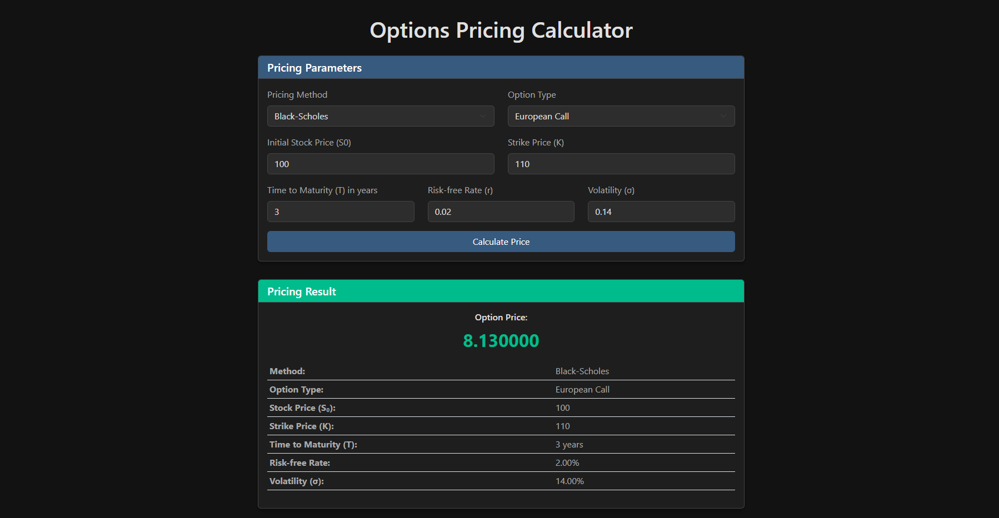

About This Project
This C++ application provides a robust framework for pricing various types of financial options using multiple pricing models. The tool supports European, American, and Asian options and implements several pricing methodologies including the Black-Scholes model, Cox-Ross-Rubinstein (CRR) binomial tree model, and Monte Carlo simulations.
Supported Option Types
- European Options: Can only be exercised at expiration
- American Options: Can be exercised any time before expiration
- Asian Options: Value depends on the average price of the underlying asset
Pricing Models Implemented
- Black-Scholes Model: Analytical solution for European options
- Cox-Ross-Rubinstein (CRR) Binomial Tree: Numerical method for both European and American options
- Monte Carlo Simulation: Stochastic approach for complex option types including Asian options
Sample Code Snippet
Results & Validation
The tool has been extensively validated against known analytical solutions and market data. Performance benchmarks show high accuracy with computational efficiency, making it suitable for both research and practical trading applications.
Future Enhancements
- Support for exotic options (barrier, lookback)
- Integration with real-time market data feeds
- Parallel computing for Monte Carlo simulations
- Implied volatility surface calibration